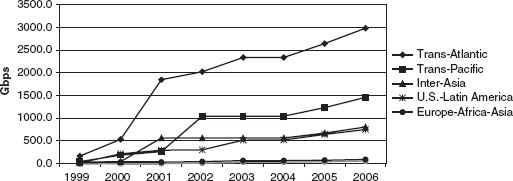

9 Internet Governance1
The Internet is credited with incubating new forms of networked governance.2 As the first ICT network infrastructure designed for the digital age, the Internet is an indicator of how governance of ICT could evolve.
There are three interrelated layers of Internet governance.3 First, development, specification, and adoption of the technical standards are voluntary, and the benefits of compatibility are widely distributed, so there are incentives to cooperate. Still, agreement can be elusive. Second, the allocation and assignment of exclusive resources, such as addresses and domain names, resembles the allocation of resources in other domains, except that it requires technical knowledge and is technically constrained. Decisions on policies and procedures must address scarcity, efficiency, equity, and the role of markets versus administrative planning. Decisions made in this layer can facilitate the enforcement of policies not related to the technical resources themselves—e.g., policies for the assigning of domain names may enforce copyright claims. The third layer concerns the policies and procedures related to the interconnection and interoperability (e.g., identity systems or DRM) of internet service providers (ISPs) and their use of physical telecommunication facilities to transport data.4
The Internet and ICT Governance
The Internet took advantage of broad underlying changes in technology by creating a digital packet network that could efficiently inter-network telecommunications networks and computing infrastructures. The expert community that pioneered the Internet was primarily American because of the dominant US position in computer sciences and markets. Nonetheless, this community was inclusive and global in its scope. The Internet’s ultimate commercial triumph was also a product of the specific political economy context of the United States.
Remarkably, the technological leadership of the Internet community succeeded in creating specialized governance arrangements that co-opted global support and largely preempted roles for other international organizations.
Internet governance seemed radically new and different in many respects. It was not a pure creation either of industry or of government. Instead, it was explicitly rooted in a technological community that saw itself as global and as not shackled by conventional political and market boundaries. This perspective was reflected in four of the Internet’s features. (1) Its architecture ignored national boundaries. (2) Its coordination depended on global technological communities that were not internally organized around national boundaries and representation. These communities’ decisions often relied on consensus led by a recognized technical authority. Unanimous consent and formal voting rules were not required, although a process of transparent posting and consultation existed. (3) Many important coordination points in the Internet resided in non-profit, nongovernmental organizations.5 (4) Governance activities relied heavily on email, online documentation, and other forms of networked collaboration enabled by the Internet itself.
This organizing vision of decision making reflected the Internet’s underlying principles and norms. The principles and most of the norms descended philosophically from the expert community that designed the Internet.
Three of the guiding principles of the Internet underpinned the specific norms for its governance. First, the “end-to-end principle” required that intelligence be predominantly placed at the edge of the network, in contrast with the traditional phone network and many early data networks. The idea was to create decentralized, flexible networking that would use the full capabilities of digital packet networking. Second, it was decided that the architecture should support genuine interoperability among networks and devices. This is a significant test that the standards-setting authority uses to assess any proposed standard. Third, an open decision process was designed to create technological progress by enlisting users and producers in a global community that would operate outside the traditional channels of governments and companies.6
The four norms that emerged to implement these principles were consistent with both the formal rules and the working expectations of the expert community. First, the introduction of competition in the provision of network infrastructure and services made digital networking more efficient and innovative. The Internet emerged from the US computer community, which championed competition in data networking. As it evolved, its governance institutions opted for architectures and processes favoring competition. The second norm, which is more controversial among governments outside the US than the first, is to limit intrusion by governments and certain corporate interests in managing the creation and administration of virtual infrastructure resources, such as Internet numbers and names or Internet standards. The third norm is to embrace open standards that do not create proprietary technological advantages out of the virtual infrastructure resources. The fourth norm, as a later addition emerging from debates on social policy, is to take positive measures to extend universal access to the Internet and information services without necessarily replicating the traditional universal service models for telecommunications.7
Internet governance is more than an experiment with technology; it also is a clue to the emerging dynamics of the governance of “trading rights.” From the start, those concerned with Internet governance assumed the possibility of convergence among applications and consciously aided this development. It also was assumed that competition and modularity were parts of the ICT infrastructure. Internet governance recognized property rights and the development of markets in virtual resources (e.g., domain names) while complementing them with processes to facilitate the sharing of specialized innovations to advance technical progress.8 The creation of specialized governance institutions also was tailored to the needs of the Internet.
But governance is never seamless or friction free. The strengths and weaknesses of Internet governance also sprang from the reality that the global Internet infrastructure was a product of a US government technology program. Washington implicitly and explicitly ceded much of the authority to govern the Internet to a global technological community drawn primarily from elite American IT research and engineering institutions. These people were principled and ambitious. They wanted to break from the prevailing standards-setting approaches, in which time-consuming processes and restrictive participation rules for major infrastructure projects were the norm. Their governance approach managed to co-opt the international scientific world so that the Internet’s “made in USA” stamp did not doom it internationally. More recently, ICANN (the Internet Corporation for Assigned Names and Numbers) and Internet governance have struggled to retain this authority because many global stakeholders, especially the governments of developing countries, grew restless with its structure and some of its priorities.
Four tensions emerged. First, Internet governance could not easily handle issues related to the creation and distribution of economic rents that emerged from the management of important virtual resources, such as domain names. Internet management was not purely technical; it had implications for market efficiency and conduct. Second, the role of traditional state authority (the Sovereignty principle) was tested by the need to devise new Internet policy in a more dynamic and efficient manner (the second norm of Internet governance). Inevitably, other governments chafed at ceding jurisdiction over all of the world’s domain-name disputes to US courts. Third, as the scale and scope of the Internet’s virtual infrastructure grows, and as security issues become more pressing, it was challenging to keep decision making speedy and resilient. Fourth, it was necessary to balance the traditional political economy of universal service goals with achieving efficiency of the Internet infrastructure. This raised equity and efficiency issues as companies bargained over reciprocal compensation when interconnecting national networks. It also injected an extended dose of global conference diplomacy, the World Summit on the Information Society (WSIS), which featured networked non-governmental organizations focused on complaints about digital divide issues and on proposed remedies. For example, one proposal, that was not adopted, was to cross-subsidize digital access by taxing domain names.
The US Political Economy
The governance of the Internet is a function of the political economy of the United States. The US political and market institutions gave a particular spin to the evolution of competition, and sent it down a particular path.
Recall that the political economy of US competition in the value-added era and in the managed-entry era favored technology neutrality in regulating ICT markets. This did not preclude support for technology development, as was demonstrated by government support for the DARPA project that led to the Internet protocols.9 The US Department of Defense sped up progress in other ways. It needed lighter weight and higher speeds in electronic circuits, so it paid huge premiums for early ICT industry products. For example, in 1960 Fairchild sold 80 percent of its transistors and all of its early production of integrated circuits to the Department of Defense.10 When Congress gave DARPA wide discretion to spend money to keep the United States ahead of the Soviet Union, the Department of Defense responded with brilliant management that included politically shrewd spending. Its spending, including on research, built a strong sustainable base of congressional support because the Department of Defense distributed its funding and thus the benefits across all of the states.11
The Internet’s full commercial significance emerged during the years 1993–2000. The Clinton administration tried diligently to brand their ICT policies as technology-friendly and pro-market.12 The full implications of the Internet and its complementary innovation, the Web, came into focus in 1993, when the first successful Web browser propelled the mass popularity of the Internet. Soon, a fundamental choice arose about how the Internet and ecommerce would align with traditional taxes, regulations, and government institutions. The Democrats were anxious to continue their courtship of the ICT community, which was commercially and technologically invigorated by the prospects of e-commerce and the infrastructure needed to enable it. The Republicans had gained majorities in the Senate and in the House of Representatives by pledging to oppose new taxes and regulations. Both parties pursued middle-class and upper-class voters, who voted in large numbers and who were caught up in Internet euphoria. Neither party wanted to seem to yield to France and its allies on matters of cultural protectionism. Thus, the Clinton administration’s approach to Internet commercialization was to protect it from traditional regulations on commerce and to make its governance as free of direct government control as was possible. Both at home and in international negotiations, the United States also tried to forge a different policy mix in response to social concerns over “the digital divide.” It tried to avoid the kinds of inefficient and often anti-competitive measures that had traditionally been used to subsidize telephone services.
Standard Setting and Institutional Innovation
The first aspect of Internet governance is standards setting for the software that enables inter-networking.13 The Internet Engineering Task Force (IETF) is the primary vehicle used to coordinate this task. Cooperation on standards can produce welfare gains, but standards also can be manipulated for strategic advantage. Standards respond to the distribution of commercial or national interests and to the institutional framework used to address questions of collective action. This is a classic “coordination” problem in game theory: there are solutions that make everyone better off, but it is easy not to achieve them.14 Why did the informal community of scientists that emerged from these projects and evolved into the IETF succeed in this case?15
The Internet evolved within a research community receiving government grants, not as a commercial research project intended for the market. Internet standard setting in this community emerged from a pioneering model of networked collaboration. The research community was an early champion of the use of email and email listservs to accomplish distributed collaboration. The community’s status as both a user and designer of Internet standards created self-correcting feedback and positive incentives that accounted for much of its early success as a standard-setting nexus.
The research community self-consciously built on a set of design principles that constituted the de facto governance principles for the Internet. The end-to-end principle placed intelligence at the edge of the network. Interoperability among networks and devices was the bottom-line objective for the architecture. An open decision process of voluntary experimentation and collaboration promoted innovation by ICT users and producers working as a global networked community.
Three factors tipped the balance toward successful collaboration to create a single protocol for inter-networking and packet switching.16 First, the US military needed a robust inter-networking solution that would make networks more reliable. Instead of trying to create its own standard-setting system, the government sought an end result: a robust system of data networking and the growth of computer science. It was content to let the computer science community provide the decision-making system for standards. This set the research agenda. In time, DARPA handed off its networking research to the National Science Foundation, which, in 1985, chose TCP/IP as the standard for NSFNET and which funded in 1986 the Internet Activities Board as the successor to DARPA funding.17 Second, the military embedded its effort in the larger computer research community and then mostly left it alone; this allowed the convergent efforts of civilian computing network design in the United States and Europe (most critically in France) to be incorporated into the technical design debate. Third, there was no significant commercial interest in the Internet approach in the early 1980s. In this context, the research community that built the US military’s trailblazing Arpanet became the model for standards setting that extended until the creation of the IETF in 1989.
The IETF now operates as a non-governmental expert system with membership open to all stakeholders, but with the rule that participants act as experts, not as representatives of governments or firms.18 The products of the IETF Working Groups are reviewed by all members who wish to do so. It is an open process, with the work posted on the Web.19 Two appointed bodies, the Internet Engineering Steering Group and the Internet Architecture Board, must approve the work products of the Working Groups. The Internet Society, an open global organization, appoints the members of these bodies.20 This process contrasted with the traditional standards-setting process for the international telephone network, which was undertaken by expert ITU work groups in an inter-governmental process. (Representatives were chosen and organized by national governments.) Standards materials were only available through payment of fees that were high enough to bar all but the most serious companies from participation.21
In its early years, the IETF was an agent of its community of technologists, not of any government. Its leadership fiercely advocated for setting standards by using a strong dose of experimentation, especially by the leading users of computer networking.22 Eventually, as commercial stakes grew, the US government had to decide whether to accept the IETF’s activities as a reasonable reflection of American interests.
One reason for delegating power in complex technical areas is to benefit from expertise, especially when there are large policy externalities. This includes formally or informally ceding agenda-setting power to highly committed, expert partisans to deflect less welcome alternatives. Even if there is no formal decision on delegation, the interest and capacity of the government to intervene can shape the prospective agent’s pattern of conduct. The IETF represented a raucous community of prestigious experts with strong views on networking, including resistance to domination of technical design by governments’ industrial policies or by the plans of influential firms. The US government’s deference to the IETF gave it the benefit of an agenda controlled by an expert community that did not routinely favor any individual company or tolerate the capture of the Internet on behalf of any country’s industrial policy.23
How did the IETF establish itself as a “de facto agent” of the US government or other governments? As the significance of the Internet emerged, it became more salient to other companies in the computer and telecommunications industries. This question crystallized in the late 1970s, when the International Organization for Standardization (ISO) tried to craft standards for commercial networking. European researchers and companies led the ISO effort, but some US rivals to IBM and some leaders in the Internet community (seeing a possible ally against the ITU) also were enthusiastic.24
The ISO’s work provided a more comprehensive map of the architecture of digital networking than the Internet community had designed. As a mapping exercise, however, the ISO needed to include alternative standards, so its map was not a seamless way to guide development. Nonetheless, the ISO’s early decision to incorporate the data networking standard setting efforts of the ITU’s International Telegraph and Telephone Consultative Committee (CCITT) into the Open Systems Interconnection (OSI) Basic Reference Model eventually alarmed Internet advocates.25 They saw the ITU’s efforts as an effort to refocus computer networking around telephone monopolies seeking to preserve their power.
The IETF community soon enlisted the US Department of Defense and its supporters in a successful effort to sway OSI to accept Internet protocols as part of its “suite” of options for the OSI architecture.26 They received assistance from many firms that saw the Internet Protocol as an alternative to IBM domination.27 In addition, the IETF persuaded the US military to fund “translator” gateways that allowed interconnection of non-Internet and Internet networks. This effectively made the ITU’s proposed protocol for data, backed by the phone companies, into a subset of TCP/IP for data networking.28 Similarly, the preeminence of the TCP/IP protocol was cemented when NSFNET adopted it.
In summary, the Internet community established its cohesion and its unique working processes because of its incubation as a government-funded research project. This genesis meant that no company’s strategic preferences dominated the handling of intellectual property rights for the Internet.29 The subsequent success of the Internet standards community, as commercial stakes escalated, rested in part on persuading major government agencies to support its efforts to “tip” the marketplace toward Internet protocols. Then, the IETF had to continuously demonstrate that it could deliver the timeliest solutions.
When the senior political levels of the US and other major industrial governments finally focused on the Internet and its standards bodies, the Internet already was a mass-market service. The earliest, high profile event relating to governments and the emergence of the Internet was the 1995 Group of Eight (G8) Summit on the “Information Society,” which set some underlying principles to guide specific government policies influencing the new digital Internet world, the Web, and e-commerce.
Internet networking already had achieved domination, and no major government wanted to argue with the large corporations that had embraced the Internet architecture. In addition, retaining the IETF as the locus of standards governance allayed the worst fears of the three major industrial regions. The US government worried that the EU or Japan might belatedly try to engage in industrial policy to overcome the lead that the US computer industry had gotten from the Internet computing revolution.30 For the EU and Japan, the IETF was an instrument to keep the computer industry away from Microsoft’s consolidated dominance.31
The issue became how to frame the IETF’s influence in terms of broader principles that the industrial governments could support. Stakeholders agreed to a formula used in many trade agreements: international standards should be “voluntary and industry led.” This principle would deflect any government from intervening strongly in the marketplace to seek competitive advantage for its firms.
As the Internet’s prominence increased, the ITU tried to reassert itself in standards setting on behalf of the national phone companies’ plans for data networking. But ITU efforts floundered because the United States and other major governments refused to undercut the control of the university research community and private information technology firms that bolstered the IETF’s leadership.
The governments of the United States and other countries did not formally delegate dominance on Internet standards to the IETF, but they rejected a new formulation that would have moved pre-eminent control over standards away from it. The IETF discreetly defended its autonomy by acting as an acceptable “virtual agent” from the perspective of governments.
In view of the huge stakes, why did the IETF community sustain its position as the first choice of the major players? First, transparent decision making promoted its credibility. The community’s history of detailed open comment, review of working groups by higher levels of authority, and spirited, open debate provided reassurance. Second, the IETF decision process was credible to governments because the community required extraordinary commitment by its leadership of noted international experts. In the language of bargaining theory, the costly and observable efforts of experts make them more believable. Third, their work is subject to verification by principals and there are large penalties for lying through peer opinion. These three conditions in combination create a situation in which a principal can rely on an agent (in this case, a virtual agent).32
Despites its past success as a focal point of networked governance, some worry that the IETF has reached the limits of its capacity. In a swiftly changing technological landscape where commercial applications evolve rapidly, time is a scarce resource for the commercial community that is a major part of the IETF constituency. Technical revisions of standards at the IETF are slow. The lack of time that leading participants can devote to its operations may force more hierarchy into the Internet governance system. This problem is likely linked to the IETF’s organizational form and methods, which rely heavily on donated time, voluntary initiative, time-consuming consensus development, and review processes. In the future, more standardization activity likely will bypass it, or its organizational form will grow more formal. Parallel changes already are underway in the Internet Society.33 If the IETF follows suit, greater hierarchy will cause the technical community and governments to revisit the terms of delegation. For example, more hierarchy may reduce the ability of group dynamics to provide for verification to principals.
Virtual Resources: Scarcity, Hierarchy, and ICANN
Like telephone numbers, domain names and IP addresses are virtual resources. Ways are needed to assign these resources to specific Internet users. Such allocation and assignment procedures introduce a need for hierarchy, which then creates issues of control and scarcity. These open up economic questions about how these points of control might be manipulated. As a result of some deep philosophical differences, there were disagreements within the technological community about how to assign domain names. Who should benefit from assignment of domain names, and how much deference should be given to commercial interests, which claim intellectual property relevant to domain names? Internet governance originated in the United States, and its political economy tilted toward support for strong trademarks and property rights to names. As a result, the initial outcome for this debate over economic policy was preordained. This section explains why there was a need for hierarchical authority with respect to the Internet’s domain name system and how this translated into a policy for property rights.
Some see the Internet as a decentralized, flat network. This is a gross over-simplification. Centralization and hierarchy in networks vary over time because complexity increases faster than network growth. A linear increase in the number of network participants can produce an exponential increase in the number of possible interconnections or relationships. Managing this increasing complexity can require disproportionate increases in the need for administrative coordination. For example, as the number of telephone subscribers grew, the number of possible connections among them increased as the square of the number of subscribers.34 Before the use of electronics for switching phone calls (matching calling and receiving numbers), mastering this growth in complexity was one reason for adopting a monopoly phone system that could impose a strict hierarchy of local, regional, and long-distance routing of calls that simplified the switching challenge.
This important challenge affects the growth of the Internet. As more networks and users join the Internet, the number of possible routes for packets grows exponentially. Information about each route must reside in every router, and must be referenced every time every packet moves through a router. Without route aggregation, which reduces the number of possible paths a router must know about, the Internet’s growth would have ground to a halt years ago. But route aggregation is achieved at a steep price. It imposes a hierarchical structure on address allocation. This makes it extraordinarily difficult to trade IP address resources freely and for users to have IP address portability, which would make it easier to switch from one ISP to another. Even with an unlimited supply of Internet addresses,35 the whole market structure of the Internet connectivity industry is severely constrained by the effects of the expanding possibilities of a growing network on routers. In short, if the Internet becomes more valuable as it increases in size, the increased complexity associated with continued growth may require structural changes in administration that fundamentally alter its character.
The Internet—literally, the internetworking of networks—depends heavily on hierarchical structures for its operation. The traditional telephone network was extremely hierarchical and was centralized at the top to conserve the then scarce resources of transmission capacity and intelligent switching capacity. Developed in an electrical-mechanical age, these resources were expensive to create and to expand.36
The Internet inverts the constraints of the telephone system. Bandwidth is relatively cheap and plentiful, and network intelligence grows in accord with Moore’s Law. Over time the goal of achieving maximum reliability in an environment of scarce resources of intelligent guidance and capacity receded in importance. Relatively flat, decentralized architectures could improve transmission efficiency.37 For example, a traditional phone call requires a dedicated circuit that is often idle during the call. In contrast, the Internet breaks all messages into separate, independently transmitted packets (a process that requires ample computer power), thereby allowing many users to share available transmission capacity.
A critical case of scarce resources helping to shape the organization of networks is the essential (or bottleneck) facility. As we argued in chapters 3 and 4, the local transmission network of phone companies is difficult to duplicate and remains critical for communications services. This scarce resource still is a central concern in the broadband era.38
The problem of scarce resources also pertains to the Internet. A prime example is a router’s capacity to store and search routing tables. YouTube’s popularity has heightened this concern. Similarly, the administrative capacity to coordinate unique domain name assignments is limited. The need for unique names produced a major coordination problem that only elements of hierarchy could resolve.39
In short, no matter how nominally flat and decentralized a network may be, a variety of elements may make it vulnerable and subject to hierarchical control. Scarce network resources, especially essential facilities, shape the design of networks, including the degree of hierarchy.
The issue of scarcity that shaped Internet governance centered on domain names, the user-friendly placeholders for numerical IP addresses.40 Domain names have two technical requirements. First, each name must be globally unique, so that information going to or from a domain is not confused. Second, during its use on the Internet, each name must be bound to a numerical IP address, which is the “real” address as far as the Internet’s packet-routing infrastructure is concerned.
The design of the domain name system (DNS) protocol provides for an inexhaustible number of domain names—there is no scarcity. But any individual name must be assigned exclusively to a responsible user so that the uniqueness of assignments is maintained. It was the need to coordinate the uniqueness of domain names that created the bottlenecks and scarcities that led to a hierarchical naming structure in DNS. To make this clearer, imagine a totally flat name space in which every computer connected to the Internet must receive a unique name. With tens of thousands of domains added and deleted every day, the process of compiling an exhaustive, authoritative, and accurate list of which names were already taken, and disseminating it to everyone who needed to reference it in a timely (every second or so) fashion, would be difficult. An additional problem is that names continually change their mapping to IP addresses as network configurations are modified.
How can a computer on the Internet know which names are available and which IP address goes with which domain? DNS solves these problems by making the name space and the mapping process hierarchical. A global central authority (ICANN) coordinates the registration of a small number of names at the top of the hierarchy (top-level domains, or TLDs). Top-level domain names include the familiar suffixes .edu, .com, .org, and .info and all the two-letter country codes, such as .uk and .mx. ICANN implements this system through the root zone file, the authoritative information source about which TLDs exist and which IP addresses to which they should be mapped. The root server system (a global system of 13 file servers that steers requests to the appropriate TLDs) draws on the root zone file to tell global Internet users which IP addresses are associated with those top-level names.
There are enormous practical benefits from this hierarchic system. Once the administrator of the root (the authority determining the TLDs) assigns names at the top of the hierarchy, the registries for each TLD (say, .com) can take over the task of assigning unique second-level names (say, aol. com), and operate their own name servers that match second-level names to their proper IP addresses. Likewise, the unique second-level name holders can distribute unique usernames or third-level names (e.g., John@aol.com). With this hierarchy in place, root-level administrators need not worry much about lower-level activities to maintain coordination. The hierarchical structure frees the lower levels from over-dependence on the top, and vice versa.41 Essentially, this solution creates a highly distributed database, referenced billions of times daily, that depends on fast, inexpensive networking. When anyone uses a Web domain name, the software associated with that Web browser asks the nearest name server to find the appropriate information.42
In principle, any computer server on the Internet can distribute copies of the root zone file to users. There are no entry restrictions. In practice, hierarchy is a result of who controls or coordinates the content of the root zone file. Moreover, the 13 “official” root servers that distribute the root zone content have achieved strong inertia because BIND, the dominant DNS software,43 points name servers to their IP addresses. This makes them the default servers for hundreds of millions of global Internet users. For any single DNS administrator to change the default values involves extra effort; for hundreds of thousands of administrators to coordinate a collective shift to new values would be extremely difficult.
In 1982, when its implementation started, the DNS name space hierarchy was an impressive solution to scaling issues facing the coordination of unique naming. It began to raise thorny political, economic, and institutional issues as the Internet in general and domain names in particular increased in value during the 1990s.44 The DNS’s hierarchical structure created an essential facility at the top of the hierarchy, raising issues about who would control it. The bottleneck character of the root was reinforced by the presence of strong network externalities. The more computers use the same naming hierarchy and name space, the easier it is for Internet users to interoperate efficiently using domain names. These network externalities, in turn, foster global convergence—and dependence—on a single, dominant root zone.45 Getting users to migrate en masse to a competing root is virtually impossible. The DNS root becomes an essential facility, and its administrator achieves substantial leverage over the industry and users. The root zone file administrator controls the supply of top-level domain names and can manipulate value and control the distribution of benefits. Competition by existing TLD registries is affected by the root administrator’s decisions. The creation of new top-level domains, or the reassignment of the right to operate a major top-level domain such as .org or .net, involves wealth transfers representing many hundreds of millions of dollars per year.
The institutional response to managing the problems of resource allocation and assignment is a classic example of delegation. ICANN represents a partial “de-nationalization” of a system of US control that relied on delegation to global decision-making arrangements. It has introduced a “chain of delegation.” The US government delegates authority to certain institutions that, in turn, allow other actors to participate.46 This delegation was designed to lock in a policy approach that America favored. The views of the private sector and technical experts were stressed, especially the views of the leaders of the Internet technical community. This permitted features to co-opt enough expert support in Europe and other technological centers to sustain control of ICANN over the root. Still, the root file zone and root server system represent essential facilities that are subject to struggles for control and disputes over distribution.
ICANN also demonstrated the advantages of controlling the negotiating agenda. The Internet already existed. It relied on the name and number system that had been created with funding from the US government. Other major countries might not have agreed to the ICANN structure if they had started to design this global capability from scratch. But the choice for these countries was to reinvent the digital wheel or to get the US government to allow more influence by global stakeholders over the conduct of the name and number system. If the US government tried to retain perfect control, it might have provoked other countries to attempt to create an alternative to the Internet or it could have fuelled heated diplomatic disputes over this function, perhaps leading to commercial retaliation against American ICT products.
ICANN’s articles of incorporation and by-laws, and the “White Paper” process creating ICANN, invited international private sector entities to participate. The goal was to allow the strongest commercial interests outside the United States to play a role in ICANN’s deliberations. The US strategy of “internationalization through privatization,” also allowed it to bypass the lengthy, difficult process of creating a new intergovernmental organization or of harmonizing territorial jurisdiction. Instead, a private corporation empowered to issue global contracts to address the governance problems was created.47 Policy decisions are vetted through a relatively open system of corporatist representation involving functional constituencies: DNS service suppliers, the Internet technical community, multinational Internet service providers, civil society, trademark holders, and country code Top Level Domain (ccTLD) managers. Participation in most ICANN meetings and processes is open to all, and seats on policy-making councils are distributed according to geographic representation rules. (We discuss complaints about this process shortly.) In a concession to European complaints, a “Governmental Advisory Committee” (GAC) provides an interface between governments and the ICANN board. GAC gradually grew in informal influence and is likely to continue to do so in response to the World Summit on the Information Society, two United Nations conferences held in 2003 and 2005.
Three instruments delegate powers to ICANN. First, a primary supervisory document regulates ICANN conduct, provides a list of ICANN’s policy-making tasks, and sets specific priorities, milestones, or targets for ICANN. Second, ICANN formalized its authority to administer the root zone by contracting with the US government to perform the so-called IANA (Internet Assigned Numbers Authority) functions (the technical coordination of unique name and number assignments). A third instrument specifies the relationship between ICANN and VeriSign, Inc. and sets the parameters under which VeriSign implements root zone file modifications.48
ICANN’s primary task is to set policy for the administration of the root zone.49 The US government, however, retains “policy authority” over the root zone file, requiring ICANN to submit proposed changes to the Department of Commerce for approval. VeriSign, a US corporation, distributes the root zone file to the 13 publicly accessible root servers. It operates a hidden primary root zone server that updates all the others. The actual operation of the 13 root servers is performed by an informal, autonomous collection of engineering groups, a residue of the informal origins of the Internet. These operators have roots in the technical community that developed the Internet, and answer DNS queries, but do not set policies related to the root zone file.50
At the root server level, the technology and political economy suggest a new dimension for the Internet. Responding to political pressures to geographically distribute root servers more equitably to lessen US domination, some root server operators developed clever ways to create multiple distributed copies of the base root servers, a technique known as “anycast.” This technique also improves the Internet’s response time. Major websites ultimately realized that they could improve their response time by introducing a complementary innovation: “mirror” websites. Instead of “going” to Yahoo’s US servers, a Web surfer could get the same content from Yahoo’s Chinese server. Mirror websites and anycasts also allowed more national control over Web content because the Chinese government (for example) could more easily censor a server in China than one in the United States.
By providing a single, authoritative source for finding information needed to resolve top-level domain names, the root server system ensures the global uniqueness of names used for email, websites, and other purposes. This ensures global compatibility in Internet applications that rely on domain names. If any competing root server system attempted to do more than distribute copies of the ICANN/DoC-approved root zone, it would introduce incompatibilities into the DNS, and undermine the network externalities of the global Internet.51
Bottleneck facilities are also a source of vulnerability. The Internet’s root server system reduces vulnerability through redundancy—if any individual root server is down, the DNS software redirects queries to another root server. Still, the absence of one authoritative source for setting the content of the root zone could introduce serious degradation and requires considerable time and effort to replace.
Internet vulnerabilities, such as the maintenance and definition of the DNS root zone file, ought to generate special protective institutional mechanisms. The centralization of power embodied in the DNS should attract political interest and substantial discretion for the agent.52 When creating ICANN, the United States “stacked the deck” in favor of its priorities. It gave the Internet technical community substantial control over the agenda to help it solve coordination problems as well as limited dispute resolution powers. ICANN’s board favored this community over government representatives and thus was at odds with governments seeking more authority. Predictably, its worldview made it a champion for the private sector’s role in the Web’s operation, a desirable propensity from the US viewpoint.53 This community also opposed any use of the domain name system to extend government regulation over the Web. This preference largely fit the Clinton administration’s priorities but later clashed with the Bush administration’s concerns over social policy. The George W. Bush administration’s priorities eventually led to a change in the terms of delegation.
One early concern of the US government was how the community might craft the balance of rights and duties in regard to trademark. Washington worried that a huge expansion of top-level domain names might drive up the costs for registering and protecting trademarks for major global companies. It also was sensitive to the question of how trademark disputes in regard to domain names would be resolved. The US responded, when the first ICANN board of directors was formed, by increasing the mix of telecommunications and information industry executives sensitive to trademark issues. The ultimate ICANN policy included dispute resolution conforming to US trademark law—an adequate solution to a complex challenge, but also a choice that was congenial to American preferences.54
The terms of the delegation also ensure that the composition of the ICANN board of directors will not veer far from the original median point. The regime’s accountability to the public and to domain name consumers is weak, while industry is well represented. The original idea of holding public, global elections to select half the members of the ICANN board was tried in 2000 but was not repeated after the election results indicated that the distribution of power envisaged in the initial stacking of the deck might be undermined by global board elections.55 Advocates for more influence at ICANN for a variety of non-governmental organizations and leaders were deflected. But government control may increase even if ICANN remains a non-profit corporation.
First, the US government, despite early promises to relinquish control over ICANN to complete its “privatization,” retained residual control over ICANN. The administration of George W. Bush reasserted this control. Its June 30, 2005 statement of principles formally asserted a US right to retain policy authority over the root, and the US government continues to press for a reversal of ICANN’s decision creating a new top-level domain for pornography (.xxx).56 This was a classic example of the ultimate principal sanctioning an agent that was using unwelcome discretion.
Second, the unilateral authority of the United States over the root became a flash point during the WSIS debates on Internet governance when the EU and various countries decried the “pre-eminence” of the US and demanded parity.57 The WSIS process escalated a long-term debate over ICANN governance. Many national governments seek greater authority. A wide divergence of preferences would occur if a consensus emerged to reduce the US sway over ICANN. The theory of delegation would predict that the discretion granted to ICANN would be reduced because even what was technical would be in question.58 Late in the negotiations, the EU surprised the US by calling for a greater role for government in overseeing “public policy for the Internet” while maintaining ICANN’s control over “technical management.” The US responded to the EU at the senior political level. Secretary of State Rice rejected the EU idea. Washington reasserted its authority during the process, invoking Internet “security and stability.”59 Congress and business interests overwhelmingly backed the US government’s claims because they opened the door to traditional intergovernmental processes that Internet governance attempted to sidestep. This provides a sharp reminder that power is delegated to serve a political and policy objective, and delegation is tied to stakeholders that define whether their general purposes are being met. The Internet governance delegation had a technological purpose (Internet design principles) and a political purpose (downgrade, not eliminate, the influence of routine government politics and processes). In the end, WSIS called on the United Nations to create an international Internet Governance Forum (IGF), but the IGF would have no real authority over ICANN. In return, the US agreed to a declaration committing countries to support actions (but not make binding financial commitments) to reduce the global digital divide.60 Although demands to move ICANN functions into the ITU were rebuffed, many state actors still insist on a distinction between “public policy” and “technical management,” reserving to states the former and consigning ICANN and private sector actors to the latter. As a result, the Governmental Advisory Committee has become more influential in ICANN’s policy process.
Third, the importance of country codes seems to be increasing. Non-US participants in early Internet development insisted on creating national domains (ccTLDs). Since then, national governments have viewed the assignment of country codes to registries as undercutting their national sovereignty.61 This creates an important national space within the global approach of the Internet design. ICANN’s initial attempt to incorporate ccTLDs into its private contractual regime, making them mere contractors on the same level of generic TLD registries such as .com and .org, failed. The regime backed down, and ICANN now recognizes a national-sovereignty right of each government to regulate “its” country code domain.62
Governance and Interconnecting Internet Transport
A third function of Internet governance (along with setting standards and distributing domain names) is to address policy choices that facilitate interconnection among Internet service providers by influencing the price and availability of data transport over telecommunications networks, especially international telecommunications transport. This debate over international interconnection of Internet traffic focused on reciprocal compensation. How should a network that exchanges services with another network be compensated? If flows in each direction are of roughly the same magnitude, the best course may be to exchange on a reciprocal “courtesy” basis. If flows are regularly unbalanced, determining compensation is more difficult. Heated debates about what constitutes “equivalent” flows can arise, as happened in debates about Web traffic flow over the global Internet. If more Web traffic enters the US than exits, how should US and foreign Web traffic carriers compensate each other, if at all?
The governance rules and processes for setting technical standards and governing domain names were new arrangements tailored to the Internet. This was never the case for Internet transport, because transport was deeply entangled in the quirky economics of the traditional governance of global telecommunications interconnection. (See the discussion of settlement rates in chapter 7.) The perennial interconnection question of “reciprocal compensation” involves matters of efficiency and potential transfers of market rents.
The Internet facilitates the transport of data bits, which can be converted to voice, data, text, images, video, or music). Its economics depend on the cost and capacity for data transport that the Internet protocols organize. When it emerged, the Internet represented a challenge by the computer industry to the logic of communications engineering associated with the telephone industry. The Internet’s designers embraced the efficiencies created by a competitive communications infrastructure. This became a norm of Internet governance.
A 1992 report to Congress by the National Science Foundation laid the groundwork, soon implemented, for introducing “network access points” into the Internet’s architecture to allow competitive provision of highspeed, broadband backbone data transport.63 The network access points also provided the infrastructure for interconnection among commercial rivals.64 The US Internet backbone was switched to commercial provision in April 1995 when the National Science Foundation contracted out transport services to four commercial providers.65 Thus, the basic policy decision on competitive infrastructure preceded any delegation of US authority to any international institution. The US policy reflected long-standing decisions, discussed earlier, mandating transmission resale designed to protect the computer networks from any commercial manipulation by the incumbent phone companies.
Companies (e.g., AOL and Earthlink) that ran national ISPs would purchase “backhaul” transmission capacity (network capacity needed to transport data over long distances) from one of several competitors.66 From 1995 through 2000, particularly rapid growth of competitive supply of backbone transport in the US reduced the need for detailed regulation for the market to protect buyers or suppliers. Despite rapidly expanding supply, a controversy emerged concerning interconnection of Internet traffic. Initially, US backbone networks had responded to increasing volumes of domestic data traffic by exchanging traffic at no fee. As volume soared, the largest carriers started investing in private “exchange points” where traffic could be swapped more efficiently. The Big 5 carriers in particular began to recognize a hierarchy among carriers. With their “peers” on volume and geographic scope in the US, they negotiated private contracts to continue exchanging traffic at no cost. They charged smaller regional networks a transport fee. A new multi-tier pricing scheme for exchanging traffic arose that immediately evoked charges of unfair interconnection pricing in the US by smaller carriers. However, the Federal Communications Commission and the Department of Justice reasoned that there was enough first-tier competition to limit any potential harm to consumers.67 The one exception to the “hands off” approach came in response to a wave of proposed mergers in the late 1990s. This led the US government to reject some mergers among the companies providing “backhaul” capacity to prevent excessive concentration of ownership of the broadband backbone.68
In contrast to its sanguine view about the market for US backbone transport, from 1993 through 1997 the US government worried about the cost and provisioning of international data transport. Until 1998, most international transport provisions were between competitive US carriers and foreign monopolies (or systems with limited competition). Prevailing international ITU rules for global communications strongly reinforced rigid, expensive networking arrangements. With the goal of introducing competitive networking across borders in order to promote greater efficiency, the US championed a shift in delegation of authority from the ITU to the WTO.69 This effort succeeded in 1997. As a new framework for competition in global data trafficking emerged, other countries began to raise concerns about the practices of the US.
The Web drove up the volume of cross-border traffic as international users sought access to many popular US websites. Foreign carriers sought contracts with US carriers for international data transport (e.g., from the international network exchange point in Seattle to a Chicago website). To large US backbone carriers, these international networks were the equivalent of small, low-volume, “second-tier” US carriers, so they charged them for exchanging traffic.70 Foreign carriers complained that the US first-tier carriers’ practices lacked transparency and took advantage of the less competitive supply of international transport to exercise market power for data transport. This concern was heightened because the US also provided many international transport links worldwide. For example, until 2000 the route from Cairo to Jakarta usually ran through the US. As noted earlier, the economics of networking mean that peering and interconnection always raise issues over how to apportion costs and revenues. In this case the low traffic flows of poorer countries seemed to doom them to higher prices.
The dispute over backbone peering occurred just when the US exercised its leverage on world markets. The Federal Communications Commission imposed a price cap to drive down the prices paid by US carriers to terminate US voice calls in other countries. The FCC believed that this measure, along with the WTO pact on telecom services, would boost investment in competitive cross-border networks and would also sharply lower the cost of data transport. (See chapter 7.) This FCC strategy provoked major economic controversy between 1997 and 2003. The controversy faded only after the FCC measure had changed the market decisively.
The combination of US efforts to force a reduction in what US carriers paid to foreign carriers for voice services and a claim that US carriers were jacking up prices to foreign carriers for Internet data transport was politically volatile. In 2000, in response, smaller industrial countries, led by Australia and Singapore and supported by non-governmental organizations, made Internet transport pricing a major issue.71 Later, in another effort to shift the delegation of global power over communications markets, developing countries raised Internet pricing as an issue at WSIS.
The ITU had long served as the delegated agent of governments for conducting international communications policy. The ITU rules supported a formula for reciprocal compensation method on international calls that heavily subsidized domestic networks and restricted competition. A large coalition of developing countries strongly supported the rules. As described in chapter 7, the industrial countries went around the ITU by shifting the delegation of authority partly to the WTO co-jurisdiction. Predictably, this pushed the ITU to revamp its approach to competition to defend against further trespassing by the WTO.
After the WTO pact, Internet transport became subject to greater scrutiny from national competition authorities and world trade rules also applied Payments for Internet connectivity became normal commercial transactions subject to regulatory oversight that are negotiated individually among local, national, and global Internet service providers. Many governments protested that the new contractual Internet arrangements did not sufficiently protect the interests of poorer countries. But there was no plausible case that the US market for peering was uncompetitive or discriminatory, the only grounds for successful WTO trade actions.
In response, critics used the WSIS to push for new government oversight to make international pricing more favorable to developing countries. Governments that were critical of the US peering arrangements enlisted NGOs to assist them at the WSIS. Any commercial practice that seemed to increase costs for developing countries, even if produced by a competitively efficient market, was decried because it would worsen the “digital divide.” These NGOs often focused more on assistance than on data transport market efficiency. Many of them were critics of competitive markets for socially sensitive services. Most of their proposals envisioned a larger renewed role for the ITU and government formulas for mutual compensation.72
This Internet traffic case shows how classic distributional disputes tend to draw more direct intervention and control by governments. In this case the battle over distribution translated into a debate over how to delegate authority. Countries emphasizing market competition preferred a larger role for the WTO. Countries emphasizing regulation to lower prices for poor countries wanted the ITU to have more authority.
The WSIS process concluded in the Tunis Declaration, which acknowledged many countries’ concerns over Internet transport services, urged careful consideration of trends toward developing more backbone infrastructure (including network access points) in regions of developing economies, emphasized the need for transparent and non-discriminatory pricing practices, and urged the ITU to continue looking at international Internet connectivity as a “digital divide” issue at the Secretary General’s Internet Governance Forum.73
In a highly dynamic market an impasse on global negotiations can permit commercial developments to change the interests of stakeholders. During the peering dispute the price of fiber-optic backbone traffic plummeted after the “telecom crash” in the late 1990s, when over-building of new fiber networks precipitated the collapse of many of them. In addition, new technological developments, including “anycasting” and Web mirror sites, reduced the need to send data to the US in order to access the content of Yahoo, Google, and other US-based Web services. Thus, the controversy over pricing for international traffic exchanges somewhat abated. Moreover, some analysts shifted their focus from complaints over pricing to proposals for stimulating traffic to and from poor countries. More traffic would improve the position of poorer countries when negotiating “peering” agreements.74 Finally, opposition by the OECD countries and by some emerging markets (including India and Singapore) that are investing in international fiber-optic networks makes any concrete results unlikely. Unless there is a finding of anti-competitive behavior that contradicts WTO obligations on basic telecommunications services, the pricing system will be left to market negotiations.
Altogether, the WSIS debate on peering did not alter an important Internet governance norm: competitive networking is the logical building block of the Internet. The success of this approach is demonstrated by the rapid growth of global networking. Figure 9.1 tracks the growth of submarine fiber capacity linking five important routes.

Figure 9.1
Lit submarine cable capacity, 1999–2006, in gigabytes per second. Source: Telegeography Research, Primetrica Inc. Capacity figures denote lit, protected capacity at the end of the respective year. Capacity for 2004 was projected from capacity upgrade announcements and new cable construction information as of March 2004. Capacity for 2005 and 2006 was projected on the assumption that cables with upgradeable capacity will increase total capacity 20 percent each year until fully upgradeable capacity is achieved. Intra-Asia capacity includes cables with landings in both Hong Kong and Japan. Trans-Pacific capacity excludes Southern Cross and PacRim East. Trans-Atlantic capacity excludes Atlantis-2. Cables retired before end of 2004 are excluded from Fully Upgraded capacity. Fully Upgraded capacity is based on system design capacity. Does not include dark cable laid but not in use.
Whatever the specific faults of its decisions, innovative Internet governance has nurtured a highly visible, technology success story. The Internet changed the way the world communicates and how it uses information to serve society. But success comes with costs, and three large challenges for Internet governance are emerging.
First, important Internet management issues are unresolved. Even after the struggles over reciprocal compensation on international data transport, authority for network regulation is divided among government institutions, national communications regulators, and the WTO and the ITU. More significantly, the current naming system gives clear property rights to holders of trademarked names and has created a commercial system for managing the Internet registries. This combination has produced some unfortunate incentives. Stakeholders in the naming system quarrel over which new classes of top level domain names should be created and how quickly this should be done. The process for resolving these debates resembles the comparative hearing processes once used to assign radio spectrum licenses. As we noted in chapter 8, such hearing processes are not conducive to quick and efficient allocation of resources, including the virtual resources, names, needed for the Internet.
Second, a major challenge will be to keep decision making quick and decisive as the scale and scope of the Internet’s virtual infrastructure grows and as new issues (e.g., security protocols to handle viruses) become more pressing. Time is a scarce resource for the experts who make the Internet Engineering Task Force credible. Discussions are underway on whether to opt for a more hierarchical decision process to expedite some decisions, but the IETF’s credibility to outside authorities depends on experts making costly personal commitments and being subject to informal peer review. Maintaining credibility while altering the decision process may undercut the willingness of outside authorities to delegate authority to the IETF.
Third, the role of traditional state authority (the Sovereignty principle) in making Internet policy is in flux, as has been illustrated at the World Summit on the Information Society. The claims for more sovereign control challenged the Internet technological community.75 Technology had made possible a partial compromise; as the Internet evolved, more of its operations moved to regions. Mirroring and anycasting created more robustness and localization, including in data transport. Even the DNS root, the most centralized function, may soon create hierarchy in one module to shield decentralization and robustness in other governance functions. Increasing national control over country TLDs and regional registries is one outcome. However, efforts to introduce distributed decision making often were blocked by strong political pressures to leverage hierarchical control of the root to achieve such goals of public policy as trademark protection, economic regulation, and governmental control over country names. The leveraging of centralized control to achieve these goals may weaken property rights associated with domain names, and may challenge the regime of trading rights. Regionalization and nationalization may also be used as excuses to turn security arrangements for Internet traffic into censorship and political intervention in the design of the Internet architecture.
But the political economy at the inflection point is important in predicting the future balance. The interests of many international stakeholders will not be served by disintegration of the structure of Internet governance. For example, software providers are betting on “software as services,” a development that depends on a robust Internet architecture. Equipment makers and carriers are betting on the flow of digital traffic, enabled by innovations tied to the Web, to stoke demand for bandwidth, storage, processing, and network equipment. Although disputes over the influence of trademarks bring out splits among the rights holders around the world, the new model of content holders (and media) for business assumes a Web-focused world with strong, if modified, intellectual property rights. These common interests make it difficult for anyone to push a dispute over the precise form of Internet governance to the brink even if many outside the United States resent its control. The reversion point in a dispute, when no one is willing, or able, to blow up the system, is close to the status quo.
ICANN is a classic example of discretion-based delegation. It has room to craft policies within a bargaining space defined by the boundaries set by the United States and other dominant players. It has an implicit mandate to find a workable consensus within those boundaries. Many of its procedural innovations in recent years, such as the Government Advisory Committee and the new procedures to improve transparency, are precisely what would be expected in these circumstances. For all of their complaints, the most influential stakeholders value ICANN because it provides great expertise and can move more quickly than systems relying on perpetual voting by government representatives. This is the case because of its innovative non-governmental structure. In short, ICANN and the IETF are not perfect, but they provide exactly the form of innovation that should be expected at the inflection point. The practices of ICANN and IETF diverge from other international institutions; they are significant experiments in global governance. But they also have not escaped from the central issues of political economy and political authority that shape all global arrangements.